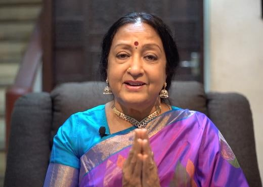

Padmavibhushan Dr. Padma Subrahmanyam
3 July 2019 · premiere of Krishnaa — Fire to Frost, Dayanand Sagar Auditorium
“To bring the Mahabharata in dance is a Herculean task, which Nirupama and Rajendra have achieved. The concept was communicated beautifully and the choreography was unparalleled. I saw the true Bharata's Natya with all four abhinayas presented in an extraordinary manner.”
“You should take this production to every nook and corner of the earth because you are reinforcing the greatness of culture and heritage values.”
Internationally reputed dancer and scholar, President of Nrithyodaya, Chennai. Recipient of the Padma Vibhushan, the Sangeet Natak Akademi's Akademi Ratna and the Fukuoka Asian Culture Prize.